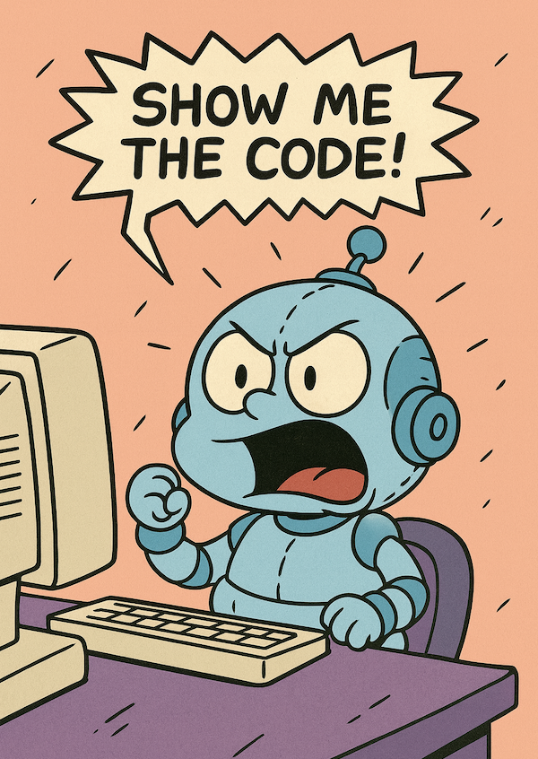

Associate Teaching Professor
Carnegie Mellon University
Have you ever wondered how type checking works? Me too—let's make one!
Python allows optional type annotations like this:
def foobar(name: str | None) -> str:
return "Fizz!"
buzz: int = 42
A type checker goes through the code to make sure that the kinds of values you use match what your functions and variables expect. In the example above, it would check if foobar always returns a str. Type checking can catch errors early and also act as documentation.
Some languages require type checking before you compile or run your code, like C++, while others, like Python, don't have a built-in type checker at all. Instead you either just wait until you have runtime errors or you use third-party tools, such as Mypy, Pyright, or Pyrefly to type check.
Note: Python has an interesting history with typing. If you want to learn more, see the specification for the Python type system, the typing module's documentation, or the PEPs (Python Enhancement Proposals) related to types.
Our baby type checker will take a Python code file, parse it, find type annotations, and then check whether the actual types are compatible with how they are used. Once we know something's type, we propagate it through the program, verifying that the types are used in appropriate ways, while also picking up more type information along the way.
Here is an example snippet that we will eventually be able to type check:
from __future__ import annotations
def greet(name: str | None) -> str:
if name is None:
return 42 # ❌ int but expected str
return "Hello, " + name
age: int = "42" # ❌ str but expected int
def length(xs: list[int]) -> int:
return len(xs) + xs # ❌ cannot add list and int
We will support primitive types, containers, functions, assignments, binary operators, indexing, type unions, and a few scenarios of type narrowing. In 350 lines of code, it will catch a surprising number of type errors in actual Python. But type checking gets complicated so there will be a lot that we won't cover.
Follow along with the code on GitHub. I'll omit bits in this article for brevity.
Anyway, show me the code!
First, we have to parse the Python code. Luckily, Python's ast module makes this easy.
import ast, sys, pprint
def main(path: str) -> None:
src = open(path, encoding="utf-8").read()
tree = ast.parse(src, filename=path, type_comments=True)
pprint.pp(ast.dump(tree, indent=4))
if __name__ == "__main__":
if len(sys.argv) != 2:
print("Usage: python3 babytypechecker.py <python-file>")
raise SystemExit(1)
main(sys.argv[1])
If you run this on our example code snippet from before, you will see the text representation of the code's AST. If you read through it, you will see the import statement, the greet function's definition, and so on:
('Module(\n'
' body=[\n'
' ImportFrom(\n'
" module='__future__',\n"
' names=[\n'
" alias(name='annotations')],\n"
' level=0),\n'
' FunctionDef(\n'
" name='greet',\n"
' args=arguments(\n'
' args=[\n'
' arg(\n'
" arg='name',\n"
' annotation=BinOp(\n'
" left=Name(id='str', ctx=Load()),\n"
' op=BitOr(),\n'
' right=Constant(value=None)))]),\n'
' body=[\n'
' If(\n'
' test=Compare(\n'
" left=Name(id='name', ctx=Load()),\n"
...
All we care about right now is (1) finding type annotations and (2) saving them so we can reference them later.
To walk Python's ast, we can subclass ast.NodeVisitor and implement functions for the specific kind of AST node we want to process, such as visit_FunctionDef for function definitions. Anytime the Python parser sees a function definition, it will call our function. Python defines 80ish different AST node classes (most are irrelevant to us). We will add a visitor function for the nodes that can carry type annotations.
Here is how we can find and save the type annotations for functions and variable assignments:
from __future__ import annotations
import ast, sys
class SymbolCollector(ast.NodeVisitor):
def __init__(self) -> None:
self.table: dict[str, str] = {}
# record function signatures
def visit_FunctionDef(self, node: ast.FunctionDef) -> None:
params = [
ast.unparse(p.annotation) if p.annotation else "Any"
for p in node.args.args
]
ret = ast.unparse(node.returns) if node.returns else "Any"
self.table[node.name] = f"({', '.join(params)}) -> {ret}"
self.generic_visit(node) # Continues into child nodes.
# record top-level annotated variables
def visit_AnnAssign(self, node: ast.AnnAssign) -> None:
if isinstance(node.target, ast.Name):
self.table[node.target.id] = ast.unparse(node.annotation)
def main(path: str) -> None:
src = open(path, encoding="utf-8").read()
tree = ast.parse(src, filename=path, type_comments=True)
coll = SymbolCollector()
coll.visit(tree)
for name, type_str in coll.table.items():
print(f"{name}: {type_str}")
if __name__ == "__main__":
if len(sys.argv) != 2:
print("Usage: python3 babytypechecker.py <python-file>")
raise SystemExit(1)
main(sys.argv[1])
Run it on our example code from earlier to see:
greet: (str | None) -> str age: int length: (list[int]) -> int
Now we are able to identify these type annotations (but not all type annotations supported by Python, yet) and see our symbol table, which maps names to declared types.
Once we know what type a variable is supposed to be, the next step is to compare it with the value being assigned. In other words, does the declared type on the left-hand side of an assignment match the inferred type on the right-hand side? If there is no annotation, we just save the inferred type for later use.
x: int = 5
In this case, the left side is an int and the right side is a number literal which we will infer as an int.
Here is how we handle these annotated assignments:
def visit_AnnAssign(self, n: ast.AnnAssign) -> None:
ann = self.eval_ann(n.annotation) # Get the annotation.
rhs = self.eval_expr(n.value) if n.value else ANY # Get the rhs type.
if is_compatible(rhs, ann):
# The lhs and rhs are compatible.
self.note(n, f"assign {ast.unparse(n.target)}: {ann} ← {rhs} ✔︎")
else:
# Not compatible.
self.err(n, f"assigned {rhs} but annotation is {ann}")
# Keep track of the type for later.
if isinstance(n.target, ast.Name):
self.scopes[-1][n.target.id] = ann
Note: I'm skipping over some of the plumbing, like the eval helper functions and the scopes list of dictionaries. You can see the full code on GitHub.
We specify which types are compatible with one another in is_compatible:
def is_compatible(a: Type, b: Type) -> bool:
if isinstance(a, AnyType) or isinstance(b, AnyType):
return True
if type(a) is not type(b):
return False
if isinstance(a, Primitive):
return a.name == b.name
return False
So far we cover threee common cases: (1) if either side is Any then it is always compatible, if their outer types don't match (e.g., an int and a List) then it is not compatible, and (3) if both are primitives then their names must match (e.g., int vs str).
The compatibility rules will grow in complexity. Should you be able to use an int where a float is expected? What about union types, like int | None? If you inherit from another type, can you use them interchangeably?
Also, for each kind of type we want to support, we will create our own class to represent it, like this:
class Type:
def __str__(self) -> str: return self.__class__.__name__
__repr__ = __str__
class AnyType(Type): pass
ANY = AnyType()
@dataclass(frozen=True)
class Primitive(Type):
name: str
def __str__(self) -> str: return self.name
If you recall the example program we want to type check:
from __future__ import annotations
def greet(name: str | None) -> str:
if name is None:
return 42 # ❌ int but expected str
return "Hello, " + name
age: int = "42" # ❌ str but expected int
def length(xs: list[int]) -> int:
return len(xs) + xs # ❌ cannot add list and int
What will the baby type checker catch?
8:0: assigned str but annotation is int
Look, it catches a type error!!!
Next we will type check functions. This involves several pieces: the return type in the function signature, every return statement in the body, the type of all the parameters in the signature, the type of all the arguments in every call site, the return type at every call site, and expand the compatibility check. Similar to variable assignments before, we want to compare the function definition to the usage of the function.
We can track the function signatures like this:
@dataclass(frozen=True)
class CallableType(Type):
positional: list[Type]
ret: Type
def visit_FunctionDef(self, n: ast.FunctionDef) -> None:
params = [self.eval_ann(a.annotation) for a in n.args.args]
ret = self.eval_ann(n.returns)
self.scope()[n.name] = CallableType(params, ret) # record
# inner scope for the body
self.push({a.arg: t for a, t in zip(n.args.args, params)})
self.expected_ret.append(ret)
self.generic_visit(n)
self.pop(); self.expected_ret.pop()
And we check the call sites:
def visit_Call(self, n: ast.Call) -> Type:
callee_t = self.eval_expr(n.func)
if isinstance(callee_t, CallableType):
ok = True
# arity check
if len(n.args) != len(callee_t.positional):
self.err(n, f"expected {len(callee_t.positional)} args, got {len(n.args)}")
ok = False
for actual, expected in zip(n.args, callee_t.positional):
if not is_compatible(self.eval_expr(actual), expected):
self.err(actual, "argument type mismatch")
ok = False
if ok:
self.note(n, f"call {ast.unparse(n.func)} ✔︎ arg-types ok")
return callee_t.ret
self.err(n, "calling non-callable value")
return ANY
And the return statements:
def visit_Return(self, n: ast.Return) -> None:
expected = self.expected_ret[-1]
got = self.eval_expr(n.value) if n.value else Primitive("None")
if is_compatible(got, expected):
self.note(n, f"return {got} ✔︎")
else:
self.err(n, f"return type {got} incompatible with {expected}")
And then add another branch to is_compatible:
if isinstance(a, CallableType):
if len(a.positional) != len(b.positional):
return False
return all(is_compatible(x, y) for x, y in zip(a.positional, b.positional)) \
and is_compatible(a.ret, b.ret)
If you go try to run this now, the baby type checker will make a weird complaint about the call to len(). Why is that? Well, no where in our code do we define this function so the type checker doesn't know about it.
self.scopes[0]["len"] = CallableType([ListType(ANY)], Primitive("int"))
This is a bandaid solution where we hardcode that len is a function that takes an argument of type Any and returns an int.
Here is a different example program to highlight the function type checking:
def add(x: int, y: int) -> int:
return x + y # ✔︎ ok
def greet(name: str) -> str:
return "Hello, " + name # ✔︎ ok
def bad() -> int:
return "oops" # ❌ return type str vs expected int
a: int = greet("hi") # ❌ assigning str to int
b: str = add(1, "two") # ❌ argument type mismatch
Run the baby type checker on it and it will catch all the type errors! In fact, there are two different type errors on the last line.
8:4: return type str incompatible with int 10:0: assigned str but annotation is int 11:16: argument type mismatch 11:0: assigned int but annotation is str
Note: If you're following along with the code on GitHub code, you can use --trace with babytypechecker.py to see a detailed output, including every individual type check that passed.
We want to support more than just simple primitive types. What would Python be without lists and dictionaries?! It is actually pretty easy to add. We need to parse the annotations, infer literals, support indexing, extend the compatibility check, and add our classes to represent lists and dictionaries.
First, we have to parse the annotations in eval_ann. It is just a matter of understanding how Python organizes the AST:
# list[T], List[T], dict[K, V], Dict[K, V]
if isinstance(node, ast.Subscript) and isinstance(node.value, ast.Name):
head = node.value.id
if head in ("list", "List"):
return ListType(self.eval_ann(node.slice))
if head in ("dict", "Dict"):
if isinstance(node.slice, ast.Tuple) and len(node.slice.elts) == 2:
k = self.eval_ann(node.slice.elts[0])
v = self.eval_ann(node.slice.elts[1])
return DictType(k, v)
Second, we need to expand is_compatible to compare the inner type(s):
if isinstance(a, ListType):
return is_compatible(a.item, b.item)
if isinstance(a, DictType):
return is_compatible(a.key, b.key) and is_compatible(a.value, b.value)
Third, we need to infer the types from list literals by checking the type of all the elements:
def visit_List(self, n: ast.List) -> Type:
if not n.elts:
return ListType(ANY)
first = self.eval_expr(n.elts[0])
for e in n.elts[1:]:
if not is_compatible(first, self.eval_expr(e)):
self.err(e, "list elements have different types")
return ListType(first)
Inferring the types from dictionary lists is a similar process but also involves the keys:
def visit_Dict(self, n: ast.Dict) -> Type:
if not n.keys:
return DictType(ANY, ANY)
k0, v0 = self.eval_expr(n.keys[0]), self.eval_expr(n.values[0])
for k, v in zip(n.keys[1:], n.values[1:]):
if not is_compatible(k0, self.eval_expr(k)):
self.err(k, "dict keys type mismatch")
if not is_compatible(v0, self.eval_expr(v)):
self.err(v, "dict values type mismatch")
return DictType(k0, v0)
Fourth, we have to get the type of indexing a list or dictionary and pass it along:
def visit_Subscript(self, n: ast.Subscript) -> Type:
container = self.eval_expr(n.value)
index_t = self.eval_expr(n.slice)
if isinstance(container, ListType):
if not is_compatible(index_t, Primitive("int")):
self.err(n.slice, "list index must be int")
return container.item
if isinstance(container, DictType):
if not is_compatible(index_t, container.key):
self.err(n.slice, f"dict key type {index_t} incompatible with {container.key}")
return container.value
self.note(n, "subscript of unknown container ↯")
return ANY
It looks at the container being indexed as well as the index expression. If it is a list, the index has to be an int and returns the element type. If it is a dictionary, it checks that the key type matches and returns the value type.
Lastly, our types:
@dataclass(frozen=True)
class ListType(Type):
item: Type
def __str__(self) -> str: return f"list[{self.item}]"
@dataclass(frozen=True)
class DictType(Type):
key: Type
value: Type
def __str__(self) -> str: return f"dict[{self.key}, {self.value}]"
So there aren't any new concepts for supporting containers, just expanding the existing mechanics of the type checker. Come up with some tests to throw at the dictionary checking.
Now for a new concept: Programs can allow a variable or expression to hold different types of values at different points in time. These are known as union types, e.g., int | None means that the value can either be an int or None. Python has multiple ways to write this (from different Python versions), such as Optional[int], Union[int, None], or just int | None.
To support union types, we have to make changes to the type checker to allow for all possible scenarios of a union. In particular, we need to parse union annotations, normalize unions, extend the compatibility check, and add our union type.
To parse unions, we expand eval_ann:
# A | B
if isinstance(node, ast.BinOp) and isinstance(node.op, ast.BitOr):
return make_union(self.eval_ann(node.left), self.eval_ann(node.right))
# list[T], List[T], dict[K,V], Dict[K,V], Optional[T], Union[...]
if isinstance(node, ast.Subscript) and isinstance(node.value, ast.Name):
head = node.value.id
if head in ("list", "List"):
return ListType(self.eval_ann(node.slice))
if head in ("dict", "Dict"):
if isinstance(node.slice, ast.Tuple) and len(node.slice.elts) == 2:
k = self.eval_ann(node.slice.elts[0])
v = self.eval_ann(node.slice.elts[1])
return DictType(k, v)
if head == "Optional":
return make_union(self.eval_ann(node.slice), Primitive("None"))
if head == "Union":
elts = node.slice.elts if isinstance(node.slice, ast.Tuple) else [node.slice]
return make_union(*(self.eval_ann(e) for e in elts))
Once again the parsing aspect isn't particularly interesting, it just involves understanding how Python builds the AST so you can capture the information correctly for all cases.
We are using a helper, make_union that creates our union type and normalizes. So given any number of types, it inlines any nested unions and deduplicates them while also swallowing other types if there is an Any. For example:
make_union(int, int) -> int make_union(int, str) -> int | str make_union(int | str, str) -> int | str make_union(Any, int) -> Any make_union(list[Any], list[int]) -> list[Any]
The implementation of make_union and another helper function:
def _flatten_union(*parts: Type) -> Tuple[Type, ...]:
opts: List[Type] = []
for p in parts:
if isinstance(p, UnionType):
opts.extend(p.options)
else:
opts.append(p)
uniq: List[Type] = []
for t in opts:
if not any(is_compatible(t, u) and is_compatible(u, t) for u in uniq):
uniq.append(t)
return tuple(uniq)
def make_union(*parts: Type) -> Type:
flat = _flatten_union(*parts)
if any(isinstance(t, AnyType) for t in flat):
return ANY
return flat[0] if len(flat) == 1 else UnionType(flat)
Now to extend the compatibility check:
if isinstance(a, UnionType) and isinstance(b, UnionType):
# every option in a must be compatible with some option in b
return all(any(is_compatible(x, y) for y in b.options) for x in a.options)
if isinstance(a, UnionType):
return any(is_compatible(opt, b) for opt in a.options)
if isinstance(b, UnionType):
return any(is_compatible(a, opt) for opt in b.options)
Lastly, our union class:
@dataclass(frozen=True)
class UnionType(Type):
options: Tuple[Type, ...]
def __str__(self) -> str: return " | ".join(map(str, self.options))
Now we can test the union types:
from typing import Union, Optional a: Union[int, str] = 1 b: Union[bool, str] = "Hi" c: Optional[int] = None d: Union[bool, int] = "oops" # ❌ str not in union
We need to consider how types evolve inside control flow. When code checks whether a value is None or uses isinstance, the checker refines its knowledge of that variable. For example, if the conditional, if x is not None, is true, then inside that branch the type is narrowed. Assertions can also narrow types after runtime checks.
To support type narrowing, we actually just need to identify the AST nodes where a type can be narrowed and push the newly narrowed types down each branch.
def visit_If(self, n: ast.If) -> None:
narrows_true: dict[str, Type] = {}
narrows_false: dict[str, Type] = {}
# isinstance(x, SomeClass) -> refine only the true branch
if (isinstance(n.test, ast.Call) and isinstance(n.test.func, ast.Name)
and n.test.func.id == "isinstance" and len(n.test.args) == 2
and isinstance(n.test.args[0], ast.Name) and isinstance(n.test.args[1], ast.Name)):
var = n.test.args[0].id
typ = Primitive(n.test.args[1].id)
narrows_true[var] = typ
self.note(n.test, f"{var} narrowed to {typ} via isinstance")
# Omitted: x is None / x is not None -> refine both branches
# Push the narrowed types down both branches.
if narrows_true or narrows_false:
self.push(narrows_true); [self.visit(s) for s in n.body]; self.pop()
self.push(narrows_false); [self.visit(s) for s in n.orelse]; self.pop()
else:
[self.visit(s) for s in n.body]
[self.visit(s) for s in n.orelse]
This looks at the condition of an if. If it is an isinstance check or a None check, we record what type the variable must have inside the true branch (and sometimes what it must not have in the false branch).
Here is a helper function to remove None from a union type when we know it can no longer be None:
def without_none(t: Type) -> Type:
if isinstance(t, UnionType):
remaining = tuple(o for o in t.options
if not (isinstance(o, Primitive) and o.name == "None"))
return remaining[0] if len(remaining) == 1 else UnionType(remaining)
return t
Similar to isinstance, assertions work like runtime checks that let us narrow types in the current scope. If we see assert x is not None, we know that after this line, x can be treated as non-None.
def visit_Assert(self, n: ast.Assert) -> None:
# assert x is not None -> refine in the current scope
if (isinstance(n.test, ast.Compare) and isinstance(n.test.left, ast.Name)
and len(n.test.comparators)==1
and isinstance(n.test.comparators[0], ast.Constant)
and n.test.comparators[0].value is None
and any(isinstance(op, ast.IsNot) for op in n.test.ops)):
var = n.test.left.id
original = self.lookup(var)
if original is not ANY and is_compatible(Primitive("None"), original):
self.scopes[-1][var] = without_none(original)
self.note(n, f"{var} refined by assert -> {self.lookup(var)}")
self.generic_visit(n)
One final test to ensure type narrowing is working for these cases:
from typing import Optional
def f(x: Optional[int]):
if x is not None:
_ = x + 1 # ✔︎ good path: x narrowed to int
else:
x + 1 # ❌ bad path: here x is None
We have type narrowing! Magic. Go ahead and test on the prior examples too to make sure we didn't break anything.
With all that, we have a baby type checker for Python that can detect a variety of type errors in just 350 lines of code. From variables to functions to union types.
While this is a great start, there are a few things missing from our type checker that you may want to add if this project interests you:
All the code can be found on GitHub. I hope this article showed that type checking is fairly simple, even in a language as large as Python, although there are many scenarios that you must cover.
Want more to read? You may enjoy these other articles of mine: